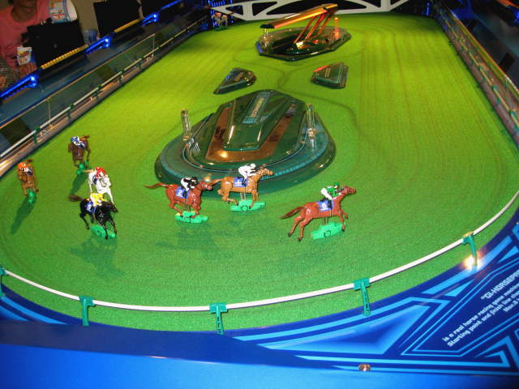

Kawaguchi
Our
hotel for our second stay in Tokyo, not pictured here, was in
Kawaguchi. Kawa means river, and guchi means "mouth" or
"entrance". You can tell what the town was named for. I'll
remember it for the colorful video games. I played this one.
I managed to do mostly okay for the first level, where you had to
beat the drums along with slow music. Level two was way too hard.
Once I need coordination, it's not for me.

This
horse-racing game involves watching little robotic horses skeeter
around. It just might be more exciting than real horse-racing,
and much more humane.
To
play this game, you move cards around over the playing surface to guide
your armies. I was hoping to see the "dog-walking" video game,
where you pull on a leash-like control to steer your dog to the finish
line, but there were enough games with creative designs to hold my
amusement. Video games are pretty much obsolete in the US, but
not here.
Back